Una bomba de 300 gramos, cien mil latidos al día y una sola arteria delgada que mantiene viva la retina
Como siempre: responde con lo que ya sabes, sin buscar. No hay nota. Al final de la mañana volvemos sobre las cinco.
Los dos ventrículos expulsan en cada latido exactamente la misma cantidad de sangre. Sin embargo, la pared del izquierdo es mucho más gruesa que la del derecho. ¿Por qué?
En los dibujos las arterias van en rojo y las venas en azul. ¿Hay alguna arteria que lleve sangre pobre en oxígeno?
Cuando alguien te ausculta con un estetoscopio oye dos ruidos por latido. ¿Qué es lo que suena: el músculo al contraerse, la sangre al correr o algo más?
Una persona pierde de golpe la visión de un solo ojo, sin dolor, y la causa resulta estar en una arteria del cuello. ¿Cómo llega un problema del cuello hasta la retina?
La hipertensión y la diabetes dañan los vasos de todo el cuerpo, pero hay un único lugar donde se pueden mirar directamente, sin cortar nada. ¿Cuál es, y quién lo mira?
El aparato cardiovascular tiene tres piezas: la sangre, que transporta; los vasos, que la conducen, y el corazón, que la empuja. Hoy estudiamos las dos últimas. La sangre queda para otra ocasión.
Lo primero que conviene tener claro es que el corazón son dos bombas pegadas. La mitad derecha y la mitad izquierda no se comunican entre sí en el adulto: cada una atiende un circuito distinto, y la sangre pasa de un circuito al otro dando la vuelta completa.
El lado derecho recibe la sangre que vuelve del cuerpo, pobre en oxígeno, y la manda por el tronco pulmonar a los pulmones. Allí suelta dióxido de carbono y toma oxígeno, y vuelve por las venas pulmonares a la aurícula izquierda. Es un recorrido corto y de baja presión.
El lado izquierdo recibe esa sangre oxigenada y la expulsa por la aorta hacia todo el cuerpo —el encéfalo y el ojo incluidos—. En los capilares de los tejidos entrega oxígeno, recoge desechos y regresa por las venas cavas a la aurícula derecha.
Arteria y vena no se definen por el color, sino por la dirección. Arteria es todo vaso que sale del corazón; vena, todo vaso que llega a él. Por eso las arterias pulmonares llevan sangre pobre en oxígeno y las venas pulmonares la llevan rica. En los dibujos del libro, rojo significa «oxigenada» y azul «desoxigenada», no «arteria» y «vena».
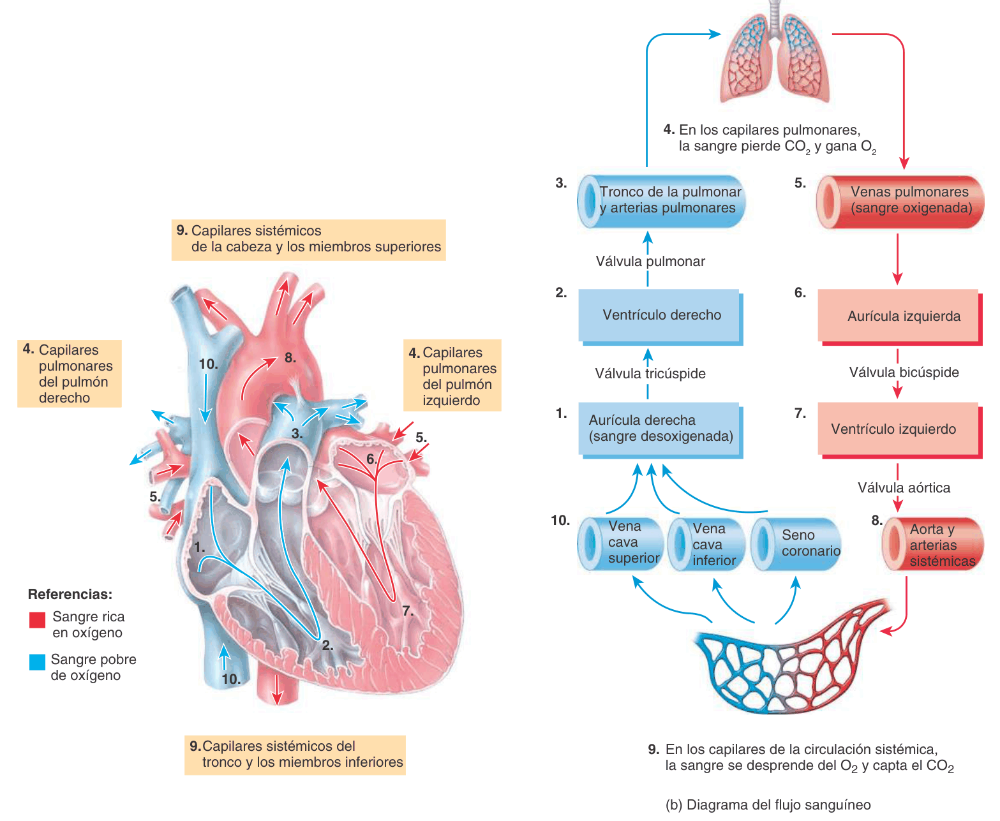
1. ¿A qué cavidad del corazón llega la sangre que vuelve oxigenada de los pulmones?
2. ¿Qué lleva el tronco pulmonar y hacia dónde?
El corazón tiene más o menos el tamaño de un puño cerrado: unos 12 cm de largo, 9 cm de ancho y 6 cm de espesor. Pesa alrededor de 250 g en la mujer adulta y 300 g en el hombre.
Está en el mediastino, el bloque de tejido que ocupa el centro del tórax entre los dos pulmones, desde el esternón hasta la columna y desde la primera costilla hasta el diafragma. Apoya sobre el diafragma y tiene dos tercios de su masa a la izquierda de la línea media.
Imagínalo como un cono acostado. La punta (ápex) la forma el ventrículo izquierdo, mira hacia adelante, abajo y a la izquierda, y apoya en el diafragma. La base es la cara opuesta, arriba y atrás, formada sobre todo por las aurículas y de donde salen y entran los grandes vasos.
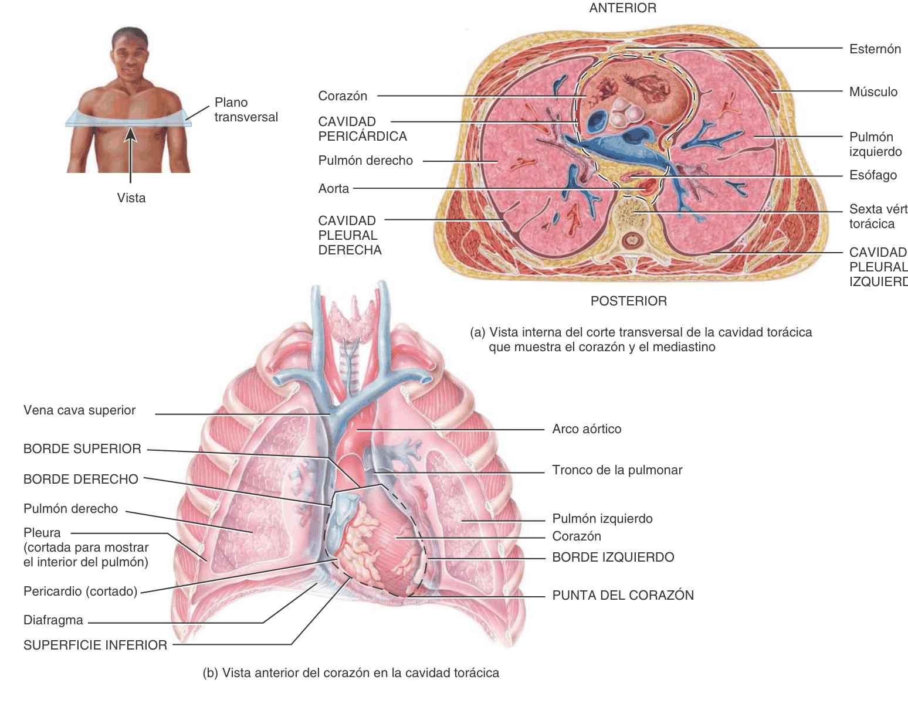
La capa externa: tejido conectivo denso, resistente y poco elástico. Protege, evita que el corazón se distienda de más y lo ancla al diafragma y a los grandes vasos.
Una membrana doble y delgada. La hoja parietal tapiza por dentro el fibroso; la hoja visceral se pega al corazón. Entre las dos queda la cavidad pericárdica, con unos pocos mililitros de líquido pericárdico que disminuye la fricción en cada latido.
La capa externa. Es la misma hoja visceral del pericardio seroso. Lleva grasa y los vasos coronarios.
La capa media y la más gruesa: músculo cardíaco. Es la que bombea. Estriado como el esquelético, pero involuntario.
La capa interna: un endotelio liso que tapiza las cavidades y las válvulas y se continúa con el revestimiento interno de los grandes vasos.
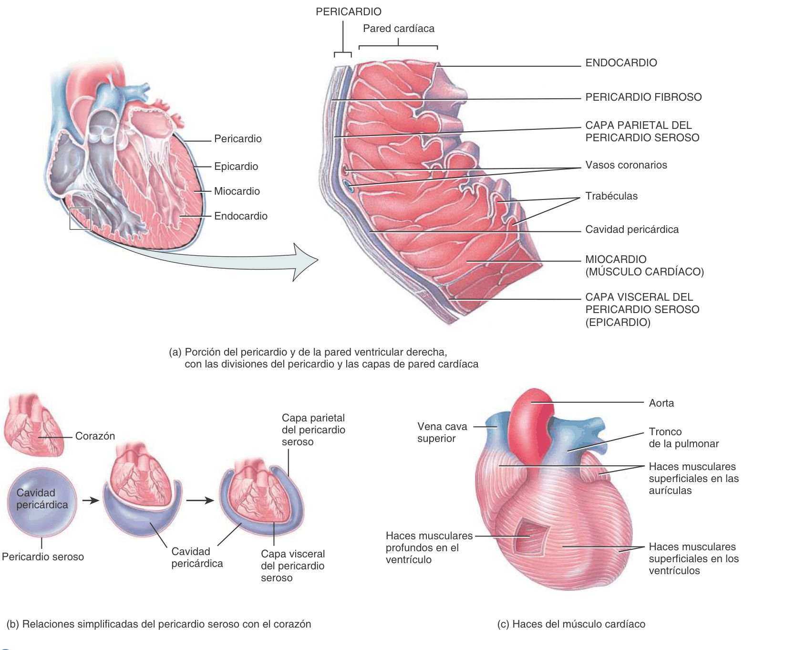
Recuerda la clase 3. El músculo cardíaco tiene fibras ramificadas, un núcleo central y discos intercalares que las unen: por ellos la señal eléctrica pasa de una fibra a la siguiente y las aurículas, o los ventrículos, se contraen como una sola unidad. Y de la clase 7: el esquelético obedece a la voluntad; el cardíaco, no.
3. ¿Qué cavidad forma la punta (ápex) del corazón?
4. ¿Qué hay dentro de la cavidad pericárdica?
5. ¿Qué capa de la pared cardíaca es la que bombea la sangre?
Tiene cuatro cavidades: dos aurículas arriba, que reciben la sangre, y dos ventrículos abajo, que la expulsan. Desde fuera no se ven las cavidades, pero se adivinan sus límites.
Cada aurícula tiene por delante una bolsa arrugada, la orejuela, llamada así por su parecido con la oreja de un perro. Aumenta un poco su capacidad.
Rodea casi todo el corazón y marca el límite entre las aurículas, arriba, y los ventrículos, abajo. Por él corren arterias y venas.
Uno anterior y uno posterior. Señalan dónde está, por dentro, el tabique que separa los dos ventrículos.
Los surcos no están vacíos: están rellenos de grasa y llevan los vasos coronarios. Por eso en el cadáver, y en la cirugía, la forma de los surcos se reconoce por el recorrido de la grasa.
Vena cava superior y vena cava inferior, a la aurícula
derecha.
Cuatro venas pulmonares, a la aurícula izquierda.
Tronco pulmonar, desde el ventrículo derecho; se divide en arterias pulmonares
derecha e izquierda.
Aorta, desde el ventrículo izquierdo; sube, forma un arco y baja.
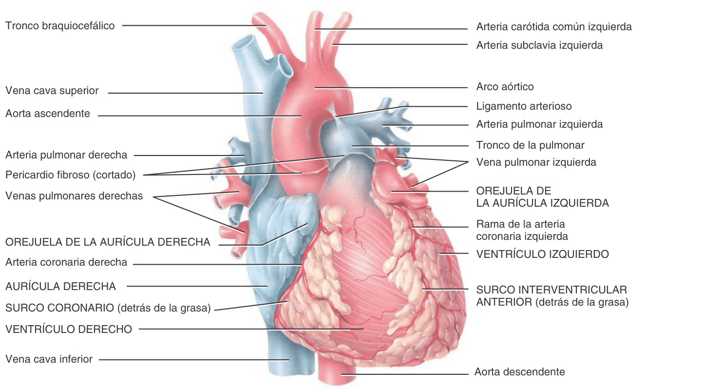
Abierto por un corte frontal, el corazón muestra sus cuatro cavidades y los dos tabiques que separan la mitad derecha de la izquierda.
Recibe sangre de tres venas: la cava superior, la cava inferior y el seno coronario, que trae la sangre del propio corazón. En su pared, que la separa de la izquierda —el tabique interauricular—, hay una depresión ovalada: la fosa oval, cicatriz de un orificio que comunicaba las dos aurículas antes de nacer.
Recibe la sangre de la aurícula derecha a través de la válvula tricúspide y la expulsa por la válvula pulmonar hacia el tronco pulmonar. Su interior está lleno de relieves musculares, las trabéculas carnosas.
Recibe la sangre oxigenada de las cuatro venas pulmonares y la pasa al ventrículo izquierdo a través de la válvula bicúspide, también llamada mitral porque se parece a la mitra de un obispo.
La cavidad de pared más gruesa. Forma la punta del corazón y expulsa la sangre por la válvula aórtica hacia la aorta. Lo separa del derecho el tabique interventricular.
El grosor de cada cavidad depende del trabajo que hace. Las aurículas, de pared delgada, solo empujan la sangre al ventrículo que tienen justo debajo. Los ventrículos la mandan lejos, y entre ellos hay otra diferencia: los dos expulsan el mismo volumen en cada latido, pero el derecho lo manda a los pulmones, que están cerca y ofrecen poca resistencia, mientras que el izquierdo lo manda a todo el cuerpo, contra una resistencia mucho mayor. Hace más fuerza y por eso tiene más músculo.
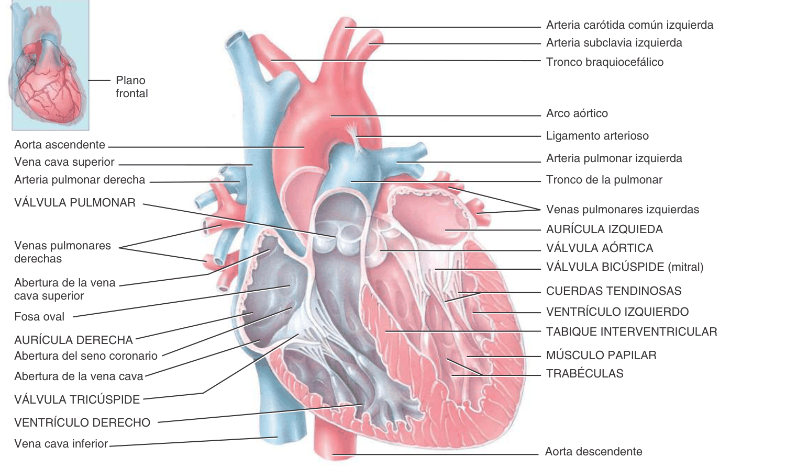
6. ¿De qué tres vasos recibe sangre la aurícula derecha?
7. Los dos ventrículos expulsan el mismo volumen por latido. ¿Por qué el izquierdo tiene la pared más gruesa?
Cada vez que una cavidad se contrae, empuja la sangre hacia adelante. Para que no se devuelva, el corazón tiene cuatro válvulas. No tienen músculo propio: se abren y se cierran solas, por la diferencia de presión entre un lado y otro.
Entre cada aurícula y su ventrículo. La tricúspide, a la derecha, tiene tres valvas; la bicúspide o mitral, a la izquierda, dos. Cuando el ventrículo se contrae, la sangre empuja las valvas hacia arriba y las cierra. Las cuerdas tendinosas y los músculos papilares, que se contraen a la vez, las sujetan para que no se volteen hacia la aurícula, como un paraguas con el viento.
A la salida de cada ventrículo: la pulmonar, hacia el tronco pulmonar, y la aórtica, hacia la aorta. Tienen tres valvas en forma de media luna. Se abren cuando el ventrículo empuja y se cierran cuando se relaja y la sangre intenta volver: las valvas se llenan como bolsillos y sellan el paso. No necesitan cuerdas.
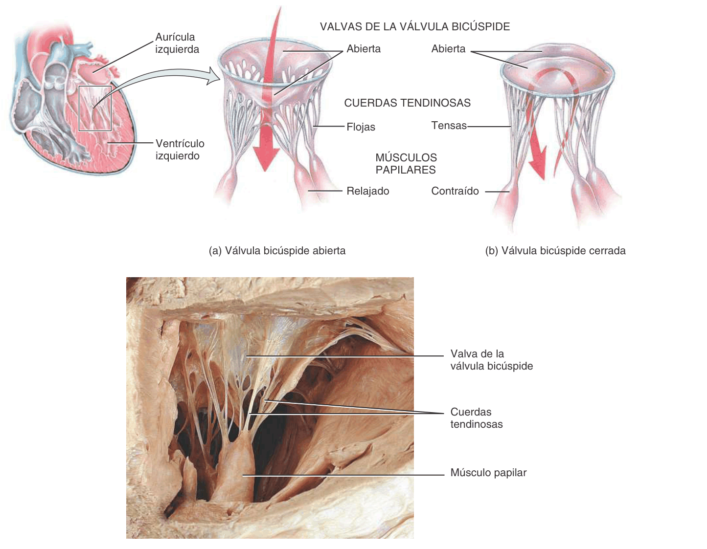
Las cuatro válvulas están en un mismo plano, sujetas por cuatro anillos de tejido conectivo denso que se unen entre sí. Ese esqueleto fibroso hace dos cosas: da un punto de apoyo firme a las válvulas y al músculo, y aísla eléctricamente las aurículas de los ventrículos. Lo segundo parece un detalle; en la estación 08 verás por qué no lo es.
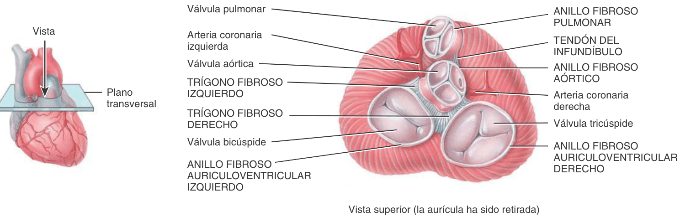
Los ruidos del corazón no son el músculo al contraerse. Son la turbulencia que produce la sangre cuando se cierran las válvulas.
Más fuerte y un poco más largo. Es el cierre de las válvulas AV al empezar la contracción de los ventrículos.
Más corto. Es el cierre de las válvulas semilunares al terminar la contracción, cuando los ventrículos se relajan.
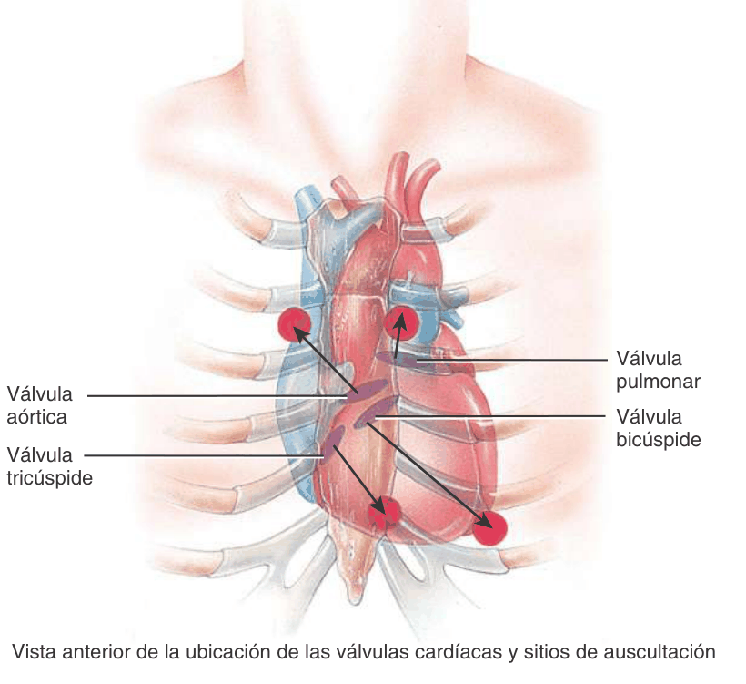
Una válvula enferma no solo suena distinto: sobre sus valvas se pueden formar pequeños coágulos o depósitos de calcio. Si uno se suelta del lado izquierdo del corazón, sale por la aorta y puede subir por una carótida hacia la cabeza. Uno de sus destinos posibles es la arteria central de la retina. En la sesión 2 seguimos ese camino hasta el ojo.
8. ¿Para qué sirven las cuerdas tendinosas y los músculos papilares?
9. ¿Qué produce el primer ruido cardíaco, el «lub»?
10. ¿Qué válvula está entre el ventrículo izquierdo y la aorta?
Una gota de sangre sale de un capilar del dedo gordo del pie y vuelve al mismo capilar. Escribe en orden, sin mirar, cada cavidad, válvula y vaso grande por el que pasa. Cuando termines, abre la respuesta y corrige con otro color.
Venas del miembro inferior → vena cava inferior → aurícula derecha → válvula tricúspide → ventrículo derecho → válvula pulmonar → tronco pulmonar → arterias pulmonares → capilares de los pulmones, donde se oxigena → venas pulmonares → aurícula izquierda → válvula bicúspide (mitral) → ventrículo izquierdo → válvula aórtica → aorta → arterias del miembro inferior → capilar del dedo.
Si te equivocaste de lado en alguna válvula, usa esta pista: tri y derecha tienen una r; bicúspide va a la izquierda. Y la sangre pasa siempre por el pulmón entre el lado derecho y el izquierdo: en el adulto no hay atajo.
11. Una gota acaba de cruzar la válvula tricúspide. ¿Dónde está ahora?
Toda la sangre del cuerpo pasa por dentro del corazón, pero el músculo cardíaco no se alimenta de ella: su pared es demasiado gruesa para que el oxígeno difunda desde las cavidades. Tiene sus propios vasos, que corren por la superficie. Es la circulación coronaria.
Las dos arterias coronarias salen de la aorta ascendente, justo por encima de
la válvula aórtica.
La izquierda se divide en la rama interventricular anterior,
por el surco del mismo nombre, que irriga las paredes de los dos ventrículos, y la
rama circunfleja, por el surco coronario, hacia la aurícula y el ventrículo
izquierdos.
La derecha da la rama marginal, para el ventrículo derecho, y
la interventricular posterior.
La gran vena cardíaca sube por el surco interventricular anterior y la vena cardíaca media por el posterior. Casi todas desembocan en el seno coronario, una vena ancha que corre por detrás, en el surco coronario, y se vacía en la aurícula derecha. Es la tercera vena que recibe esa aurícula.
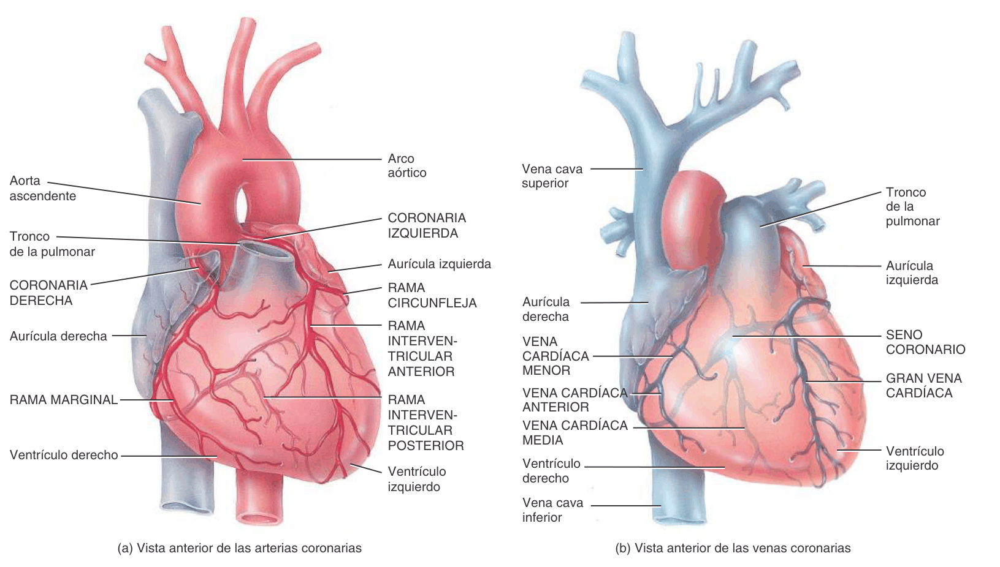
La causa más común es la aterosclerosis: en la pared de las arterias se acumulan colesterol, células inflamatorias y tejido fibroso, y forman una placa que va estrechando la luz del vaso. Los factores que la favorecen son conocidos: tabaquismo, hipertensión, diabetes, colesterol elevado, obesidad, sedentarismo, la edad y los antecedentes familiares.
El flujo disminuye y el músculo recibe menos oxígeno del que necesita. Se debilita, pero no muere.
El dolor de la isquemia: opresión en el pecho que puede irradiarse al cuello, la mandíbula o el brazo izquierdo. Aparece con el esfuerzo y cede con el reposo.
La obstrucción es completa y dura lo suficiente: la zona que irrigaba esa arteria muere y se reemplaza por una cicatriz que ya no se contrae.
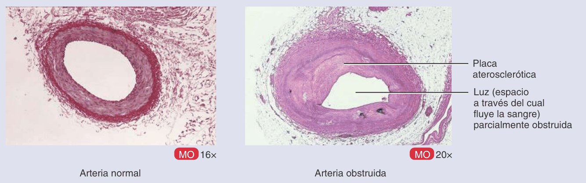
La aterosclerosis no es una enfermedad del corazón: es de las arterias de todo el cuerpo, y las carótidas son de sus lugares preferidos. A veces, al examinar el fondo de ojo, se ve dentro de una arteriola de la retina un punto brillante y amarillento: un fragmento de colesterol que se desprendió de una placa de la carótida y quedó atascado allí. Quien ve eso no está viendo un problema del ojo; está viendo una placa en el cuello que puede causar un accidente cerebrovascular, y debe remitir.
12. ¿De qué arteria sale la rama interventricular anterior?
13. ¿Qué diferencia un infarto de miocardio de una angina de pecho?
El corazón late solo. Si se corta todo nervio que llega a él, sigue latiendo: la orden la generan unas fibras musculares especiales, las fibras autorrítmicas, que se excitan por sí mismas una y otra vez y conducen la señal por un camino fijo.
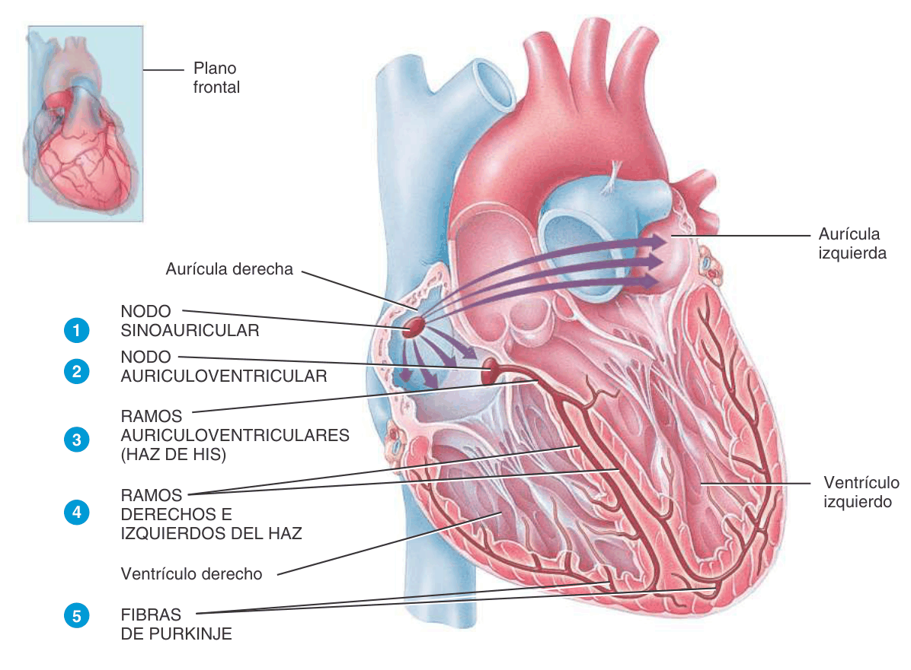
Por su cuenta, el nodo SA descargaría unas 100 veces por minuto. En reposo el corazón late más despacio, unas 75, porque el nervio vago (X) —parasimpático— lo frena todo el tiempo. Cuando haces ejercicio o te asustas, los nervios simpáticos lo aceleran y aumentan la fuerza de la contracción. Ambos obedecen al centro cardiovascular del bulbo raquídeo, el mismo que viste en la clase 8.
La actividad eléctrica del corazón llega a la piel, y unos electrodos la registran. Ese trazado es el electrocardiograma (ECG). No se trata de interpretarlo, sino de saber qué representa cada parte.
La despolarización de las aurículas: la señal que las recorre justo antes de que se contraigan.
La despolarización de los ventrículos, justo antes de su contracción. Es la parte más alta porque los ventrículos tienen mucho más músculo.
La repolarización de los ventrículos: se preparan para relajarse y recibir el siguiente latido.
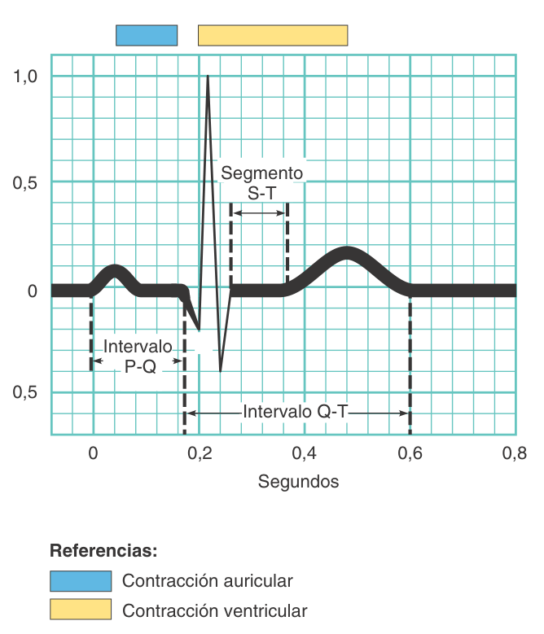
14. ¿Qué estructura marca el ritmo del corazón en condiciones normales?
15. En el electrocardiograma, ¿qué representa el complejo QRS?
Todo lo que pasa en un latido, desde que empieza hasta que empieza el siguiente, es un ciclo cardíaco. Con el corazón a 75 latidos por minuto dura unos 0,8 segundos. Tiene dos tiempos, y los dos se refieren sobre todo a los ventrículos.
Primero se contraen las aurículas y terminan de llenar los ventrículos. Después se contraen los ventrículos: la presión cierra las válvulas AV —primer ruido—, abre las semilunares y la sangre sale hacia la aorta y el tronco pulmonar.
Los ventrículos se relajan y la presión cae: las semilunares se cierran —segundo ruido—, las AV se abren y la sangre que se acumuló en las aurículas vuelve a llenar los ventrículos. En reposo, el corazón pasa más tiempo relajado que contraído.
En cada latido, cada ventrículo expulsa unos 70 mL: es el volumen sistólico. No se vacía del todo: le quedan dentro unos 60 mL. Si multiplicas el volumen sistólico por la frecuencia cardíaca obtienes el gasto cardíaco, la sangre que sale del ventrículo en un minuto.
Gasto cardíaco = volumen sistólico × frecuencia cardíaca
70 mL por latido × 75 latidos por minuto = 5250 mL/min, es decir, unos 5,25 litros por
minuto. Es más o menos todo el volumen de sangre de un adulto: en reposo, toda tu sangre
da una vuelta completa cada minuto. Durante el ejercicio intenso el gasto puede multiplicarse
varias veces, subiendo a la vez la frecuencia y el volumen de cada latido.
16. Un corazón late a 60 latidos por minuto y expulsa 80 mL en cada latido. ¿Cuál es su gasto cardíaco?
Toca la tarjeta para voltearla. El término en español y en el latín de la Terminologia Anatomica, y debajo por qué te importa a ti.
Órgano muscular hueco con cuatro cavidades que bombea la sangre por dos circuitos.
👁 De «cor» vienen coronaria y cardíaco.
El bloque central del tórax, entre los dos pulmones, donde está el corazón.
👁 Por él suben la aorta y las arterias que llevan sangre a la cabeza.
Membrana doble —hoja parietal y visceral— con líquido lubricante entre las dos.
👁 La hoja visceral es el epicardio.
La capa muscular de la pared cardíaca; la que bombea.
👁 Muere en el infarto; el ojo tolera aún menos minutos sin sangre.
Recibe la sangre de las dos cavas y del seno coronario.
👁 Aquí vuelve la sangre de la vena central de la retina.
La cavidad de pared más gruesa; expulsa la sangre a la aorta y forma la punta.
👁 De su fuerza depende la presión que llega a la retina.
La pared que separa los dos ventrículos. Por él bajan las ramas del haz de His.
👁 Afuera se adivina por los surcos interventriculares.
Válvula de tres valvas entre la aurícula y el ventrículo derechos.
👁 Tri y derecha: las dos con «r».
Válvula de dos valvas entre la aurícula y el ventrículo izquierdos. También bicúspide.
👁 Una mitral enferma puede soltar émbolos hacia la cabeza.
Válvula semilunar a la salida del ventrículo izquierdo.
👁 Su cierre es parte del segundo ruido.
Cordones que unen las valvas AV con los músculos papilares.
👁 Evitan que la válvula se voltee como un paraguas.
Relieve muscular en forma de cono dentro del ventrículo, del que salen las cuerdas.
👁 No confundir con la papila del nervio óptico.
Nace de la aorta ascendente y se divide en interventricular anterior y circunfleja.
👁 La aterosclerosis que la cierra también afecta a la carótida.
Vena ancha que recoge la sangre del corazón y la vacía en la aurícula derecha.
👁 Seno venoso aquí; en la sesión 2 verás el seno cavernoso.
El marcapasos natural, en la pared de la aurícula derecha.
👁 El vago lo frena; el simpático lo acelera.
La arteria que sale del ventrículo derecho y lleva sangre pobre en oxígeno a los pulmones.
👁 Arteria por dirección, no por color.
Dos preguntas que obligan a juntar varias estaciones. Contesta antes de mirar la retroalimentación.
17. Si el nodo sinoauricular deja de funcionar, ¿qué es lo más probable?
18. Un hombre de 58 años, fumador y con colesterol alto, siente una opresión en el pecho que se extiende al brazo izquierdo cada vez que sube escaleras. El dolor desaparece a los pocos minutos de reposo. ¿Cuál es la explicación más probable?
La sangre sale del corazón por arterias, que se ramifican en arteriolas; éstas terminan en capilares, donde ocurre el intercambio con los tejidos; los capilares se reúnen en vénulas, y éstas en venas que regresan al corazón.
Arterias y venas tienen la pared en tres capas. Cambia el grosor de cada una, no el plan.
El endotelio, un epitelio plano simple que está en contacto con la sangre, sobre su membrana basal. Es el mismo revestimiento del endocardio.
Músculo liso y fibras elásticas. El músculo liso, gobernado sobre todo por el simpático, estrecha (vasoconstricción) o ensancha (vasodilatación) la luz del vaso.
Tejido conectivo con fibras elásticas y colágenas. Ancla el vaso a lo que lo rodea y lleva los nervios y los pequeños vasos de la propia pared.
Pared gruesa, sobre todo la túnica media, porque soportan presión alta. Las grandes, como la aorta, son elásticas: se estiran en cada latido y, al recuperarse, siguen empujando la sangre mientras el corazón se relaja. Las arteriolas son las que más regulan cuánta sangre llega a cada tejido.
Las mismas tres capas, pero más delgadas y con la luz más ancha. Por eso un corte de vena suele verse aplastado. Muchas, sobre todo las de los miembros, tienen válvulas.
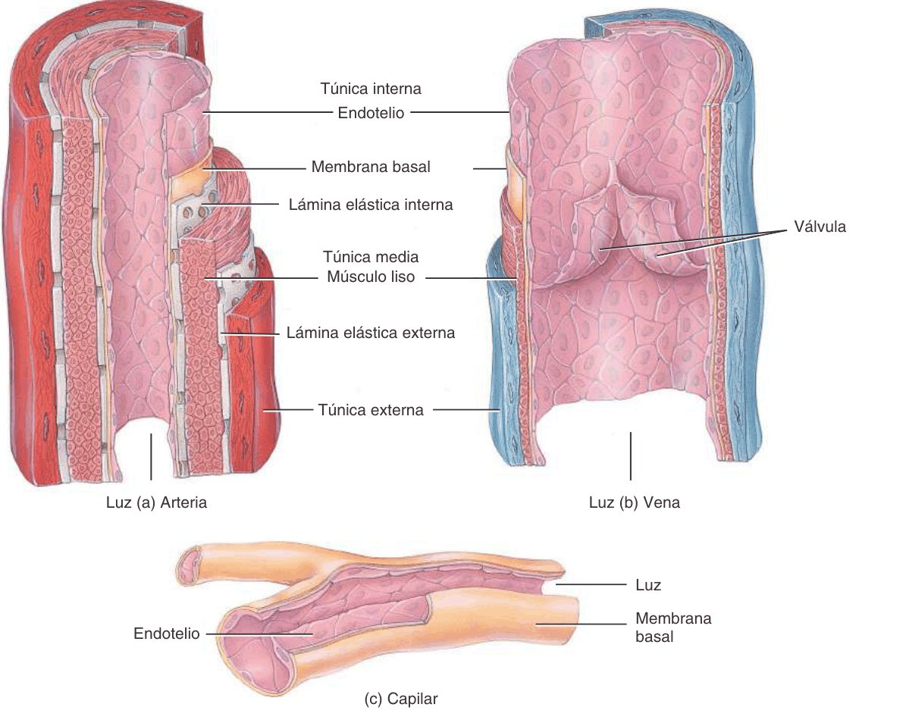
Su pared es una sola capa de endotelio, y por eso permiten el intercambio de gases, nutrientes y desechos. Según qué tan cerrada sea esa pared hay tres tipos.
Las células endoteliales forman un tubo sin poros, solo con pequeñas hendiduras entre ellas. Son la mayoría: en el sistema nervioso central, los pulmones, la piel y los músculos.
Tienen poros en las células. Dejan pasar más cosas. Están en los riñones, el intestino, los plexos coroideos del encéfalo, las glándulas endocrinas y los procesos ciliares del ojo.
Anchos y tortuosos, con grandes huecos entre las células y la membrana basal incompleta. Están en el hígado, la médula ósea y el bazo.
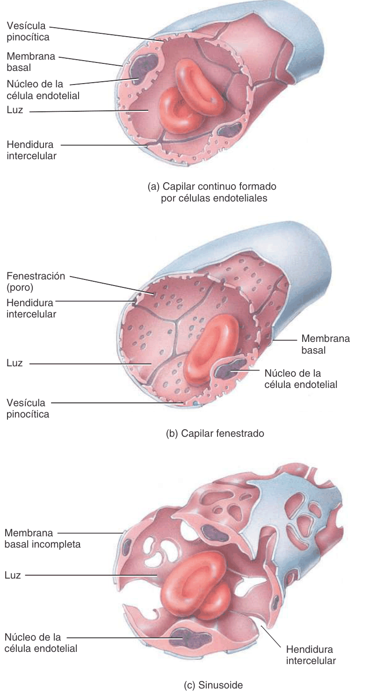
En el ojo conviven dos tipos de capilar, y la diferencia importa. Los procesos ciliares tienen capilares fenestrados: por esos poros sale el líquido con el que se forma el humor acuoso. Los capilares de la retina, en cambio, son continuos y con las células muy unidas, igual que los del encéfalo: forman una barrera hematorretiniana, hermana de la hematoencefálica de la clase 8. Cuando la diabetes daña esa barrera, los capilares dejan escapar líquido y sangre, y la retina crea vasos nuevos frágiles que sangran con facilidad: es la retinopatía diabética.
1. ¿Qué capa de la pared arterial contiene el músculo liso que cambia su calibre?
2. Los procesos ciliares, que producen el humor acuoso, tienen capilares:
En reposo, alrededor del 64 % de toda la sangre está en las venas y vénulas del circuito sistémico. Las arterias tienen cerca del 13 %, los capilares el 7 %. Por eso las venas funcionan como un reservorio: cuando hace falta más sangre en otra parte —en una hemorragia o durante el ejercicio—, el simpático las contrae y la moviliza.
Cuando la sangre llega a las vénulas casi no le queda presión: no hay un corazón empujando desde atrás que alcance para subirla un metro y medio. La ayudan dos cosas.
Pliegues de la túnica interna en forma de bolsillo, que miran hacia el corazón. Dejan pasar la sangre hacia arriba y se cierran si intenta devolverse. Son más numerosas en las venas de las piernas.
Al caminar, los músculos de la pantorrilla se contraen y exprimen las venas que pasan entre ellos. La válvula de arriba se abre, la de abajo se cierra, y la sangre sube un tramo. La respiración ayuda de forma parecida desde el tórax.
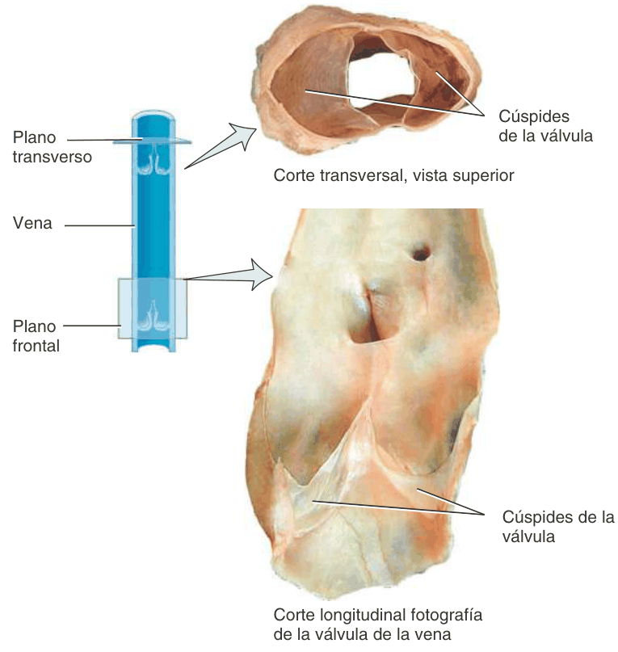
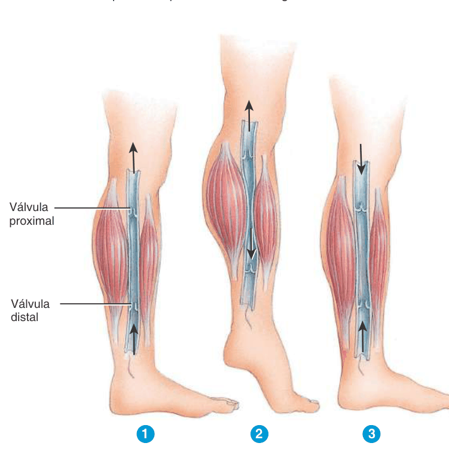
Cuando las válvulas fallan, la sangre se acumula, la vena se estira y se vuelve tortuosa: son las várices. Y cuando una persona está mucho tiempo de pie sin moverse, sin bomba muscular, la sangre se estanca en las piernas: es la razón por la que alguien se desmaya en una formación.
3. En reposo, ¿dónde está la mayor parte del volumen de sangre?
4. ¿Qué dos cosas permiten que la sangre venosa suba desde las piernas?
La presión arterial es la fuerza que ejerce la sangre contra la pared de las arterias. Sube y baja con cada latido, y por eso se expresa con dos números.
La más alta: se alcanza cuando los ventrículos se contraen. En un adulto joven en reposo, unos 110 mm Hg.
La más baja: la que queda en las arterias mientras los ventrículos se relajan. Unos 70 mm Hg. Si no llega a cero es gracias a la elasticidad de las grandes arterias.
Así, «110/70» se lee «ciento diez sobre setenta». La presión va cayendo a lo largo del circuito: es máxima en la aorta, cae mucho en las arteriolas, llega a los capilares ya sin pulsaciones y es casi cero cuando la sangre entra en la aurícula derecha. La sangre siempre corre de donde hay más presión hacia donde hay menos.
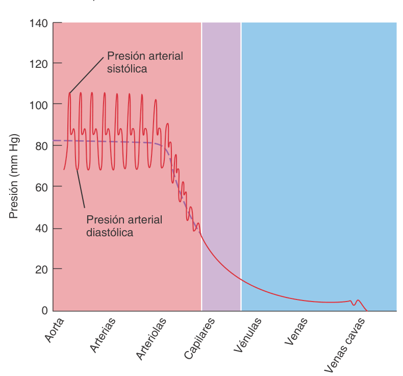
El control está en el centro cardiovascular del bulbo raquídeo. Recibe información de unos sensores de estiramiento, los barorreceptores, situados en dos lugares estratégicos:
Una pequeña dilatación de la carótida interna, justo donde nace. Vigila la presión de la sangre que va al encéfalo y al ojo. Su información viaja por el nervio glosofaríngeo (IX).
Vigila la presión que sale hacia todo el cuerpo. Su información viaja por el nervio vago (X).
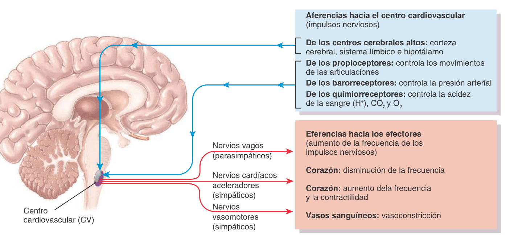
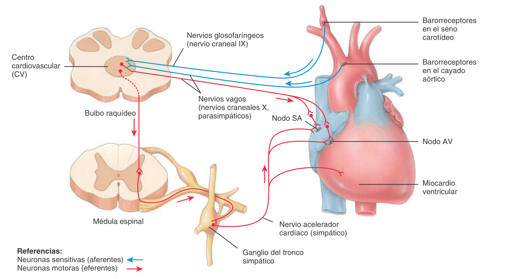
La retina es el único lugar del cuerpo donde se pueden ver arteriolas y vénulas directamente, y Tortora lo dice así: por eso el examen del fondo de ojo sirve para detectar los daños de la hipertensión y de la diabetes. Cuando la presión se mantiene alta durante años, las arteriolas de la retina se estrechan y se vuelven rígidas; donde una arteriola cruza por encima de una vénula, la aprieta y la vena parece interrumpida —el cruce arteriovenoso—. En los casos graves aparecen hemorragias y exudados. Quien mira ese fondo de ojo está viendo cómo están las arteriolas del riñón y del encéfalo.
5. En una presión arterial de 120/80, ¿qué representa el 80?
6. ¿Por qué nervio llega al bulbo la información de los barorreceptores del seno carotídeo?
Todas las arterias del circuito sistémico salen de la aorta. Tiene cuatro tramos: la aorta ascendente, que nace del ventrículo izquierdo y da las coronarias; el arco aórtico, que se curva hacia la izquierda y atrás; la aorta torácica, que baja por detrás del corazón, y la aorta abdominal, desde el diafragma hasta la pelvis. No hace falta aprender todas sus ramas: la del mapa completo es para ubicarse.
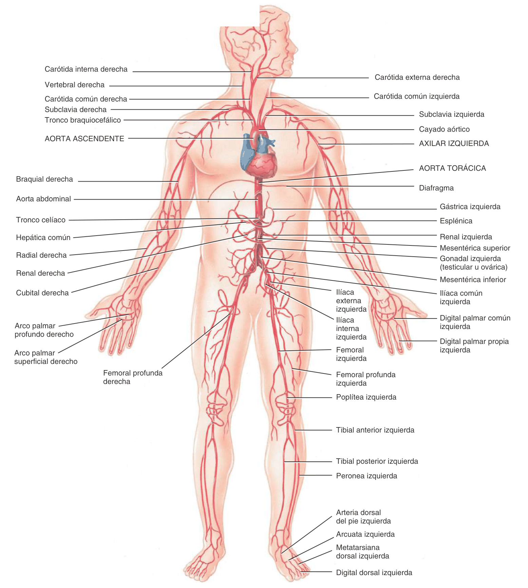
La asimetría es la que suele confundir: a la derecha, carótida y subclavia comparten un tronco; a la izquierda, cada una sale por su cuenta.
Cada carótida común sube por el cuello y, a la altura del borde superior del cartílago tiroides, se divide en dos. La carótida externa irriga la cara, el cuero cabelludo y el cuello. La carótida interna no da ramas en el cuello: entra al cráneo, atraviesa el seno cavernoso y da su primera rama importante, la arteria oftálmica. Termina irrigando buena parte del cerebro.
Nacen de las subclavias, suben por los agujeros de las vértebras cervicales y entran al cráneo por el foramen magno. Sobre el tronco del encéfalo se unen en una sola, la arteria basilar, que irriga el tronco, el cerebelo y, por las cerebrales posteriores, los lóbulos occipitales, donde está el área visual.
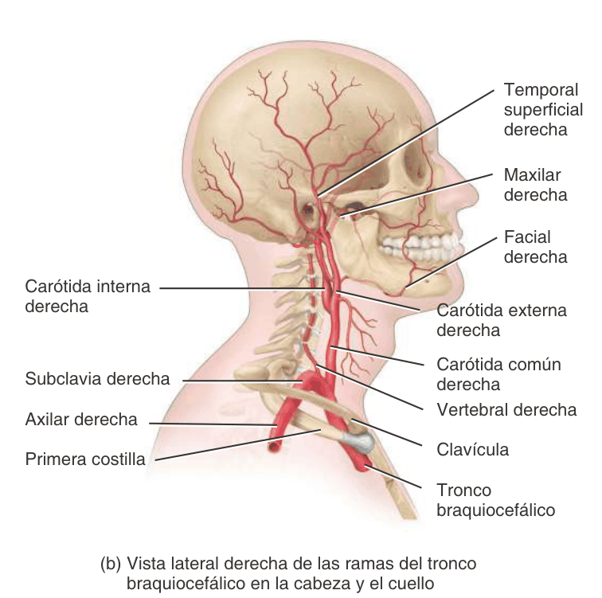
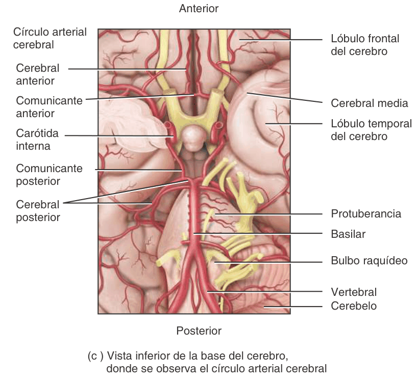
En la base del cerebro, las ramas de las dos carótidas internas y de la basilar se unen en un anillo: el círculo arterial cerebral o polígono de Willis. Es una anastomosis, una conexión entre arterias. Si una se obstruye poco a poco, la sangre puede llegar a la misma zona por otro camino. Queda justo alrededor del quiasma óptico y de la hipófisis.
La arteria comunicante posterior corre pegada al nervio oculomotor (III). Cuando se forma allí un aneurisma —una dilatación de la pared arterial—, puede comprimir el nervio. Las fibras parasimpáticas que contraen la pupila van por la superficie del III, así que muchas veces lo primero que aparece es una pupila dilatada que no reacciona a la luz, a veces con párpado caído y el ojo desviado. Es una urgencia: el aneurisma puede romperse.
7. ¿Cuáles son las tres ramas del arco aórtico, en orden de derecha a izquierda?
8. ¿Qué une el círculo arterial cerebral (polígono de Willis)?
Ya tienes el camino hasta la cabeza: ventrículo izquierdo → aorta → arco aórtico → carótida común → carótida interna. Desde aquí el recorrido es corto y lo describe el Latarjet.
Es la primera rama importante de la carótida interna, que la da al salir del seno cavernoso, dentro del cráneo. Entra a la órbita por el conducto óptico, junto al nervio óptico, y allí se reparte. De sus ramas, cuatro grupos te importan:
Se mete dentro del nervio óptico, detrás del globo, y viaja por su centro hasta salir en el disco óptico. Allí se divide en una rama superior y una inferior, y cada una en nasal y temporal. Irriga las capas internas de la retina. El Latarjet subraya que es independiente de los vasos de la coroides: sus anastomosis son muy finas y raras.
Atraviesan la esclera alrededor del nervio óptico. Las cortas, numerosas, van a la coroides, que nutre las capas externas de la retina —los conos y los bastones—. Las largas avanzan hasta el cuerpo ciliar y forman con otras ramas el círculo arterial mayor del iris.
Irrigan los músculos extraoculares de la clase 7 y, desde ellos, dan las ciliares anteriores, que llegan a la parte anterior del globo.
La lagrimal va a la glándula lagrimal y a los párpados. Otras salen de la órbita hacia la frente y la nariz, y una de ellas se une con la arteria angular, rama de la facial: un pequeño puente entre la carótida interna y la externa.
La retina tiene dos proveedores. Las capas internas dependen de la arteria central de la retina; los fotorreceptores, de la coroides. Por eso una misma retina puede quedarse sin sangre en una parte y no en la otra, y por eso interesa saber cuál de los dos proveedores falló.
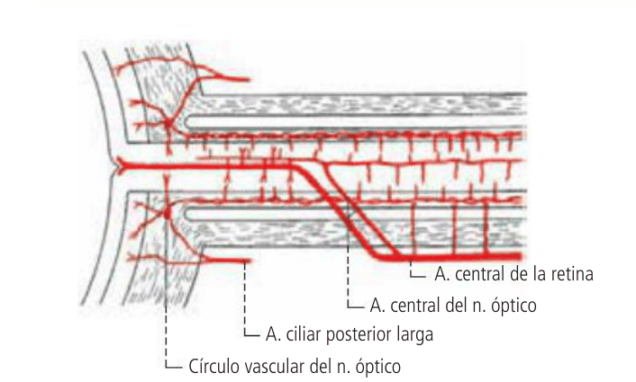
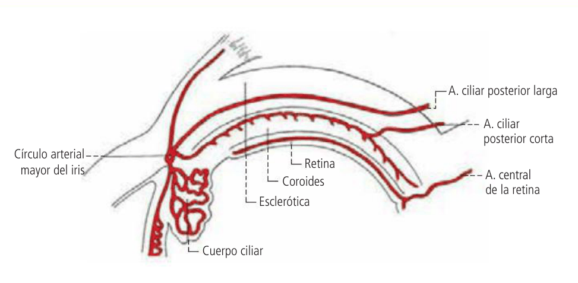
Con el oftalmoscopio se ve el final de este recorrido. Del disco óptico salen las arteriolas y entran las vénulas, en cuatro grandes ramas: temporal superior, temporal inferior, nasal superior y nasal inferior. Las arteriolas son más delgadas y de un rojo más claro; las vénulas, más gruesas y oscuras. Todas rodean la mácula sin entrar en su centro.
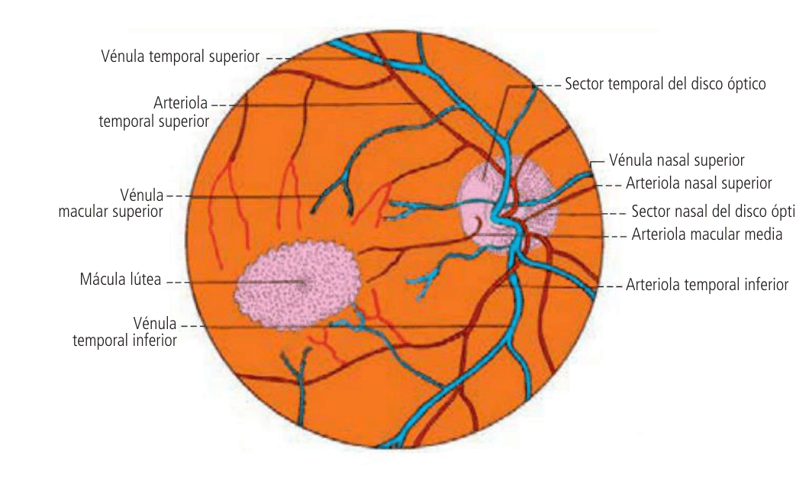
Si un émbolo —de una placa de la carótida o del corazón— tapa la arteria central de la retina, como es prácticamente terminal, las capas internas se quedan sin sangre de golpe. La persona pierde la visión de ese ojo en segundos y sin dolor. En el fondo de ojo la retina se ve pálida e hinchada, y en el centro de la mácula queda una mancha rojo cereza: ahí la retina es tan delgada que deja ver el color de la coroides, que sigue irrigada. Es una urgencia. A veces avisa antes: una pérdida de visión de un ojo que dura unos minutos y se recupera sola, la amaurosis fugaz. Quien la cuenta debe estudiarse las carótidas, porque el siguiente émbolo puede ir al cerebro.
9. ¿De qué arteria es rama la arteria oftálmica?
10. ¿Qué arterias nutren la coroides, de la que dependen los conos y los bastones?
11. Al mirar un fondo de ojo, ¿de dónde salen las arteriolas de la retina?
La sangre de la retina se recoge en la vena central de la retina, que acompaña a la arteria dentro del nervio óptico y va a drenar en la vena oftálmica. Hay dos venas oftálmicas, superior e inferior, y las dos llevan la sangre de la órbita hacia atrás, al seno cavernoso.
En la clase 8 viste que la duramadre forma conductos venosos, los senos. Recogen la sangre del encéfalo y del ojo y la llevan a la vena yugular interna. El seno cavernoso está a cada lado del hueso esfenoides, junto a la silla turca, y tiene algo que lo hace único: lo atraviesan la carótida interna y el nervio abducens (VI), y por su pared pasan el oculomotor (III), el troclear (IV) y las ramas oftálmica y maxilar del trigémino.
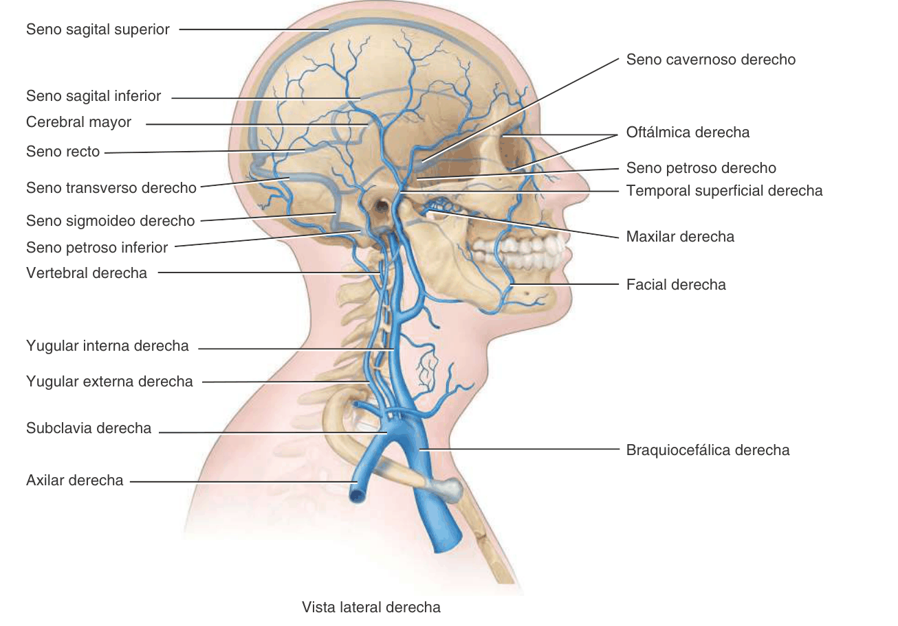
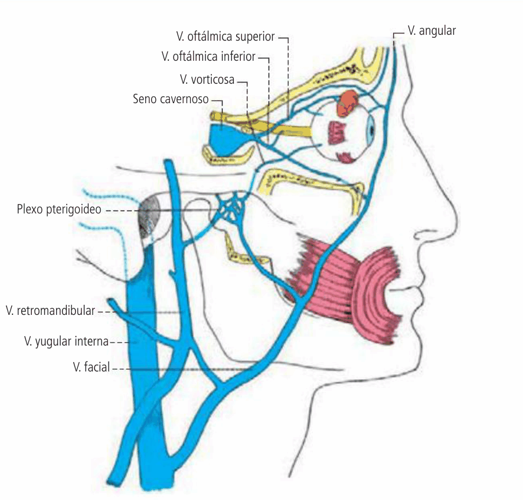
Un puente sin válvulas. Las venas oftálmicas se comunican por delante con la vena angular, rama de la facial, que drena la piel de la nariz y del labio superior. Estas venas de la cabeza no tienen válvulas que impidan el reflujo, así que la sangre —y una infección— puede ir en cualquier dirección: desde la cara, por la órbita, hasta el seno cavernoso.
Oclusión de la vena central de la retina. Si la vena se tapa, la sangre sigue
entrando por la arteria pero no puede salir. Las venas se ven dilatadas y tortuosas, y aparecen
hemorragias en toda la retina. La pérdida de visión suele ser menos brusca que en la oclusión
arterial. Se asocia con la hipertensión, la diabetes, el glaucoma y la edad.
Trombosis del seno cavernoso. Una infección de la piel de la cara puede llegar al
seno cavernoso por el puente venoso. Como por ahí pasan el III, el IV, el VI y el V₁, el cuadro se ve
en el ojo: globo empujado hacia adelante, párpados hinchados, dolor y movimientos oculares
limitados. Es una urgencia.
12. ¿En qué estructura drenan las venas oftálmicas?
13. ¿Por qué una infección de la piel de la nariz puede llegar al seno cavernoso?
El circuito pulmonar es corto. Del ventrículo derecho sale el tronco pulmonar, que se divide en las arterias pulmonares derecha e izquierda. En los capilares que rodean los alvéolos la sangre suelta dióxido de carbono y toma oxígeno, y vuelve por las cuatro venas pulmonares a la aurícula izquierda.
Es un circuito de baja presión: el ventrículo derecho alcanza unos 25 mm Hg, frente a los 120 del izquierdo. Los pulmones están cerca y sus vasos ofrecen poca resistencia, y además la presión baja evita que el líquido se salga de los capilares hacia los alvéolos.
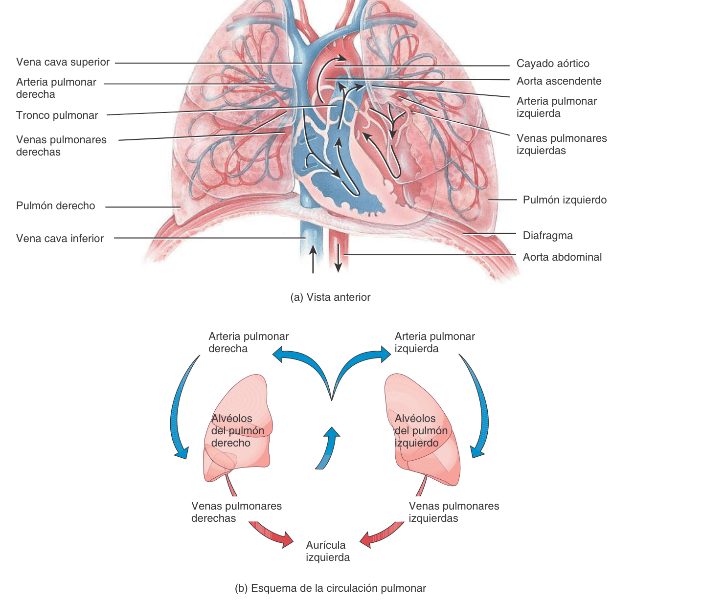
Para cerrar, vuelve a mirar todo junto. Además de la sistémica y la pulmonar, verás un tercer circuito en el abdomen, la circulación portal hepática: la sangre del intestino pasa por el hígado antes de volver al corazón. Hoy solo la nombramos.
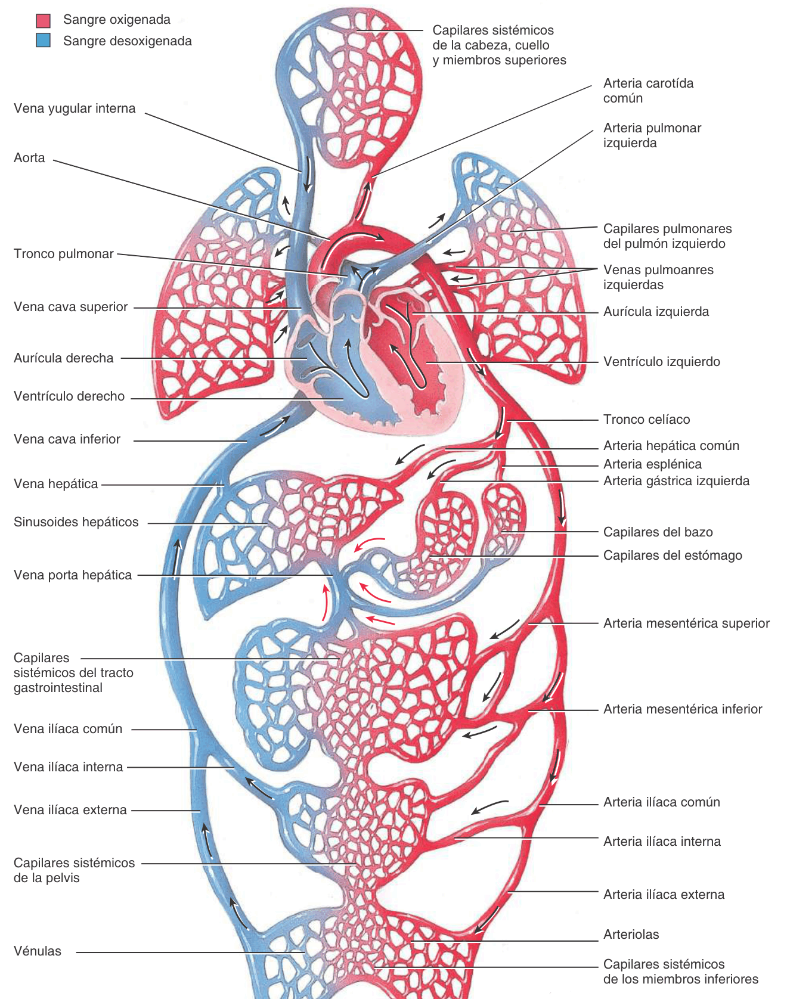
14. In English. After birth, which are the only arteries that carry deoxygenated blood?
Toca la tarjeta para voltearla.
La capa de músculo liso de la pared vascular; estrecha o ensancha el vaso.
👁 Se engruesa en la hipertensión: lo ves como arteriolas retinianas estrechas.
Vaso de una sola capa de endotelio donde ocurre el intercambio.
👁 Continuo en la retina, fenestrado en los procesos ciliares.
Tramo curvo de la aorta del que salen las arterias de la cabeza y los miembros superiores.
👁 Sus barorreceptores informan por el vago.
Primera rama del arco; da la subclavia y la carótida común derechas.
👁 Solo existe del lado derecho.
Rama de la carótida común que entra al cráneo, cruza el seno cavernoso e irriga el cerebro.
👁 De ella nace la oftálmica.
Dilatación del inicio de la carótida interna con barorreceptores.
👁 Informa por el glosofaríngeo (IX).
Rama de la subclavia que sube por las vértebras cervicales y forma la basilar.
👁 Su territorio incluye el lóbulo occipital y el área visual.
Anillo arterial en la base del cerebro que une las carótidas internas con la basilar.
👁 Rodea el quiasma; su comunicante posterior va junto al III.
Primera rama importante de la carótida interna; entra a la órbita por el conducto óptico.
👁 Toda la irrigación del ojo sale de ella.
Viaja dentro del nervio óptico, sale en el disco e irriga las capas internas de la retina.
👁 Su oclusión: pérdida súbita e indolora, mancha rojo cereza.
Atraviesan la esclera junto al nervio óptico y forman la coroides.
👁 Nutren los fotorreceptores.
Recoge la sangre de la retina, viaja en el nervio óptico y drena en la vena oftálmica.
👁 Su oclusión: venas tortuosas y hemorragias en toda la retina.
Drena la órbita hacia el seno cavernoso y se comunica con la vena angular.
👁 El puente sin válvulas entre la cara y el cráneo.
Seno venoso de la duramadre a cada lado del esfenoides.
👁 Lo cruzan la carótida interna y el VI; en su pared, III, IV, V₁ y V₂.
Recibe la sangre de los senos de la duramadre y la lleva hacia el corazón.
👁 Por ella baja la sangre que salió del ojo.
Cuatro venas que llevan sangre oxigenada de los pulmones a la aurícula izquierda.
👁 Venas con sangre roja: la dirección manda.
Tres preguntas que juntan las dos sesiones.
15. ¿Cuál es el camino correcto de la sangre desde el ventrículo izquierdo hasta la retina?
16. Al ponerse de pie de golpe baja la presión que llega a la cabeza. ¿Qué hace el reflejo barorreceptor?
17. Una mujer de 67 años, hipertensa y con una placa en la carótida derecha, consulta porque hace una hora dejó de ver por el ojo derecho de un momento a otro, sin dolor. En el fondo de ojo la retina está pálida y en el centro de la mácula se ve una mancha rojo cereza. ¿Qué vaso se obstruyó con mayor probabilidad?
Las mismas de esta mañana. Léelas otra vez y comprueba cuántas contestas ahora con seguridad.
Porque el volumen es igual pero el esfuerzo no. El ventrículo derecho manda su sangre a los pulmones, un circuito corto y de poca resistencia, con unos 25 mm Hg. El izquierdo la manda a todo el cuerpo, contra una resistencia mucho mayor, y alcanza unos 120 mm Hg. Más fuerza exige más músculo.
Sí: las arterias pulmonares. Llevan la sangre que volvió del cuerpo desde el ventrículo derecho hasta los pulmones. Arteria es todo vaso que sale del corazón, y vena todo vaso que llega; el color de los dibujos indica oxígeno, no tipo de vaso. Por eso las venas pulmonares llevan sangre oxigenada.
El cierre de las válvulas. El «lub» es el cierre de las auriculoventriculares, tricúspide y mitral, al empezar la contracción de los ventrículos. El «dub» es el cierre de las semilunares, aórtica y pulmonar, cuando los ventrículos se relajan. Ni el músculo ni la sangre que corre producen esos dos sonidos.
Por el camino que recorriste en la sesión 2. Una placa de aterosclerosis en la carótida suelta un fragmento que sube por la carótida interna, entra en la oftálmica y se atasca en la arteria central de la retina. Como esa arteria es prácticamente terminal, las capas internas de la retina se quedan sin sangre de golpe. A veces el aviso llega antes, como una pérdida de visión de pocos minutos: la amaurosis fugaz.
En la retina. Es el único lugar del cuerpo donde se pueden ver arteriolas y vénulas directamente, y se miran con el oftalmoscopio en el examen del fondo de ojo. Por eso lo que ve un optómetra —arteriolas estrechas, cruces arteriovenosos, hemorragias, vasos nuevos— informa del estado de los vasos del riñón, del encéfalo y del corazón.
Lo que hay que llevarse de hoy. El corazón son dos bombas en serie, con cuatro válvulas que obligan a la sangre a ir en un solo sentido, sus propias arterias y un marcapasos eléctrico. De su lado izquierdo sale la aorta, y del arco suben las carótidas: la interna da la oftálmica, y ésta la arteria central de la retina, delgada y sin desvíos. La sangre vuelve por las venas oftálmicas al seno cavernoso. Por eso lo que le pasa al corazón y a las arterias de todo el cuerpo —la aterosclerosis, la hipertensión, la diabetes— puede verse primero en un fondo de ojo.